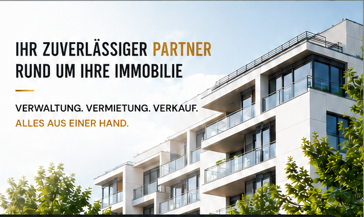

Mietverwaltung
Professionelle Verwaltung von Wohn- und Gewerbeeinheiten.
Immobilienkompetenz in Dresden & Sachsen
Verwaltung, Vermietung und Verkauf – persönlich begleitet, professionell umgesetzt.

Über Quartiva
Wir sind Ihr kompetenter Partner für die professionelle Verwaltung, Vermietung und den Verkauf von Immobilien. Mit fundierter Erfahrung, persönlichem Einsatz und einem klaren Blick für Werte schaffen wir Sicherheit für Ihre Immobilie.
Eigentümer, Investoren und Mieter profitieren von transparenter Kommunikation und einer partnerschaftlichen Zusammenarbeit auf Augenhöhe.
Unsere Leistungen
Individuelle Lösungen rund um Ihre Immobilie – klar, effizient und mit dem Anspruch an nachhaltigen Werterhalt.
Professionelle Verwaltung von Wohn- und Gewerbeeinheiten.
Rechtssichere und transparente Verwaltung für Eigentümergemeinschaften.
Individuelle Betreuung und nachhaltiger Werterhalt.
Marktgerechte Vermittlung und professionelle Verkaufsabwicklung.
Organisation von Instandhaltung, Modernisierung und Kontrollen.
Persönliche Betreuung, Besichtigungen und Beratung.
Ihre Vorteile
Direkte Ansprechpartner und individuelle Lösungen.
Klare Abläufe und nachvollziehbare Verwaltung.
Fundierte Erfahrung im regionalen Immobilienmarkt.
Effiziente Prozesse mit professioneller Verwaltungssoftware.
Kontakt
Ob Verwaltung, Vermietung oder Verkauf: Wir freuen uns auf Ihre Anfrage.
AdresseNeubertstraße 29
01307 Dresden